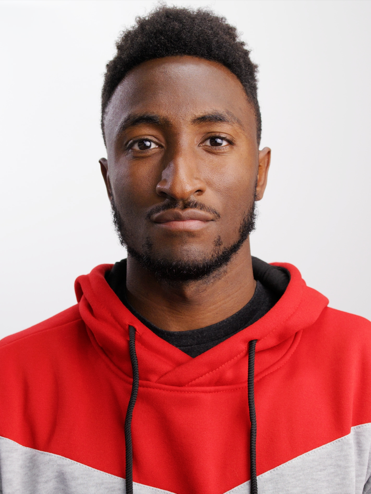
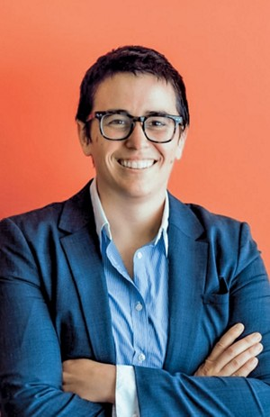

Kaleb's Tech Hero: Alphonzo Terrell
Alphonzo created the social platform Spill, created to give the LGBTQIA+ community and people of color a safe space to connect with one another, stay updated with current affairs and pop culture news. The startup also contributs to raise funds for Black faimiles that were affected by the LA wildfires. This site fills a huge gap in the social media market that give marginalized groups a voice, and a safe space to be themselves without feat of being judged or harassed.
Alphonzo went to college at Columbia University in New York, and then worked for ShowTime and Sony, and was the director of digital and social marketing at HBO. He then worked at Twitter but was let go after the company was aquired by Elon Musk. This is when he went and created the social platform Spill. Spill is the first black-owned social platform and has gained attention from CNN, Essence and GPB.
📄 Wiki Page: Alphonzo Terrell
🎤 Alphonzo Talks about Spill: Alphonzo Talks
Josh's Tech Hero: Marques Brownlee
Marques Brownlee—perhaps better known as MKBHD—is a case study in how identity and opportunity intersect in the tech world. As a Black tech reviewer on YouTube dominating a space where people of color are often sidelined, Brownlee quietly disrupts the implicit biases that shape who we view as “experts” in the field of technology.
Representation isn’t just about visibility; it’s about rewriting the stories we tell. In his video "Reflecting on the Color of My Skin", he urged audiences to intentionally support Black creators, warning how algorithms can suppress diverse voices if engagement wavers. He doesn’t just talk about equity—he engineers it. Behind the scenes, Brownlee spotlights his diverse team on his co-produced, second YouTube channel: The Studio.
Tech media often treats diversity as a “niche” box to check, but his success defies that framing. With over 18 million subscribers, he’s outcompeted other creators due to his consistent dedication to quality, forcing platforms like YouTube to reckon with their own algorithmic biases. When he mentors rising creators of color or promotes reviews or photography from marginalized members of his team, he’s redistributing power.
📄 Wiki Page: Marques Brownlee
Daria's Tech Hero: Prof. Alison Wendlandt
As a woman in chemistry, seeing Prof. Alison Wendlandt leading the charge at MIT is both rare and deeply inspiring. One of the few openly queer women in STEM at her level, she is advancing chemical synthesis with a focus on precision and efficiency. Her research tackles major challenges in enantioselective catalysis and alkene isomerization, enabling chemists to control molecular transformations with unprecedented accuracy -- work that has implications for drug development, materials science, and sustainability.
One of Wendlandt's breakthroughs is in rare sugar synthesis, where she and her group developed a catalyst system that efficiently converts D-Glucose into D-Allose, a potential low-calorie sweetener. Her lab has also pushed the boundaries of stereochemical editing, designing catalytic processes that rearrange molecular structures in ways previously thought impossible.
Recognized with awards like the Beckman Young Investigators Award and NIH Director's New Innovator Award, she is not only shaping the future of chemistry but also advocating for more diverse, inclusive academic spaces.
📍 MIT Wendlandt Lab: Wendlandt Lab
🧪 Read Prof. Wendlandt's Research: Synthesis of rare sugar isomers through site-selective epimerization
📄 Wiki Page: Alison Wendlandt